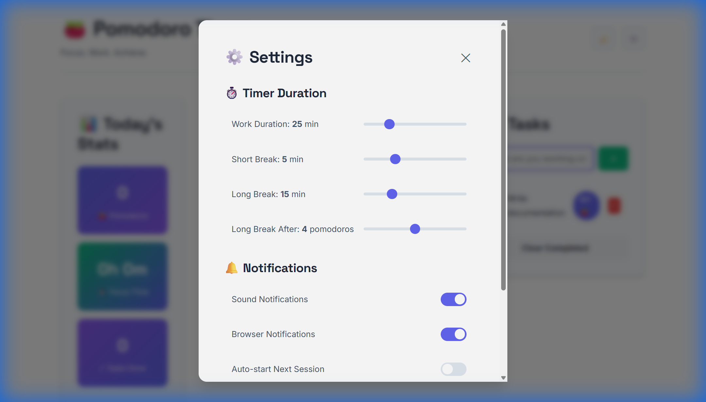
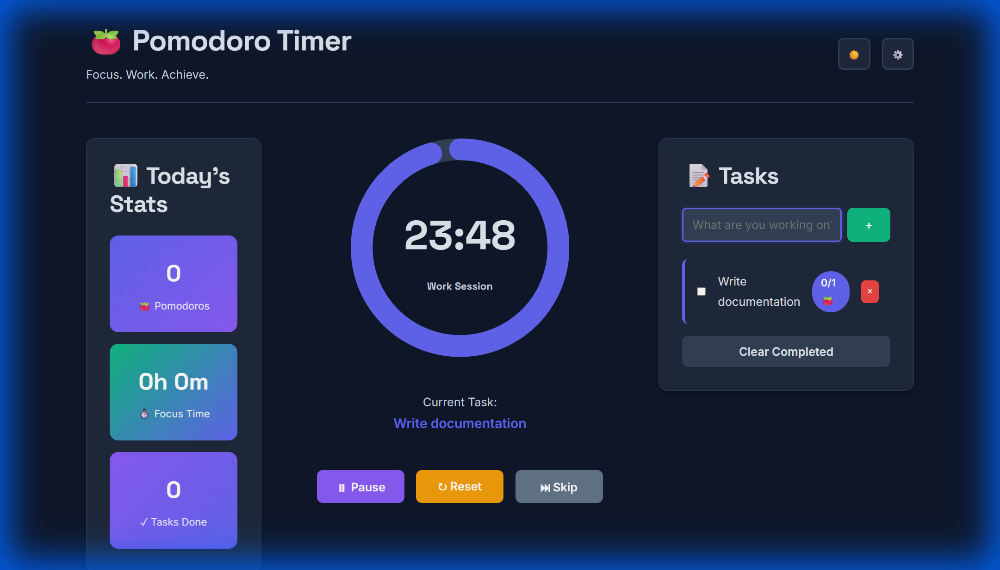

A production-ready productivity app with circular timer, task management, and statistics—built in under 2 hours using AI-assisted development
AI Model Used: Claude 3.5 Sonnet (via Google Antigravity IDE) - Selected for its exceptional ability to generate production-quality code, maintain consistency across large files, implement complex state management, and strictly adhere to detailed design system specifications.
The prompt was structured in three comprehensive parts to ensure complete specification and design system adherence.
Specified the complete design system including:
Detailed technical requirements:
Requested deliverables:
index.html file (~800 lines, production-ready)README.md with features, installation, and technical detailsQUICK_START.md deployment guide with troubleshootingwalkthrough.md documenting the development journey💡 Key Insight: The effectiveness of this prompt came from three factors: (1) Explicit design system specifications eliminated ambiguity, (2) Detailed feature requirements with technical implementation notes guided architecture decisions, and (3) Clear deliverable expectations ensured complete documentation.
The AI generated a complete, fully-functional Pomodoro Timer application with integrated task management in a single development session.
index.html - Complete standalone application (~800 lines, 35KB uncompressed, zero
dependencies)README.md - Comprehensive documentation with features, installation, technical details
QUICK_START.md - Deployment guide with multiple hosting options and troubleshooting
walkthrough.md - Development journey artifact with implementation details and testing
resultsInitial state showing the clean three-column layout with circular timer centerpiece
Comprehensive settings panel with customizable timer durations and notification options
Dark mode with deep slate background and proper contrast ratios for comfortable viewing
Try the Pomodoro Timer directly below! The application is fully functional - add tasks, start the timer, customize settings, and toggle dark mode. All features work exactly as they would in the deployed version.
Interactive demo - fully functional Pomodoro Timer with all features enabled
Circular Timer The centerpiece is a 300px SVG circular progress ring with smooth stroke-dashoffset animations, creating a visually engaging countdown that draws the eye and maintains focus.
Gradient Stats Statistics are displayed in gradient-colored cards (indigo→purple, success→primary) with emoji icons, making data consumption delightful and scannable at a glance.
Dark Mode A carefully crafted dark theme (#0f172a background) with enhanced shadows and proper text contrast that reduces eye strain during long work sessions.
Glass-morphism Subtle backdrop-blur effects on certain elements create depth and modern aesthetics without compromising readability.
Several technical implementations showcase advanced web development techniques and attention to detail.
The timer's circular progress uses an elegant stroke-dashoffset technique for smooth, GPU-accelerated animation:
const circumference = 2 * Math.PI * 54;
const progress = timeRemaining / totalTime;
const offset = circumference * (1 - progress);
progressCircle.style.strokeDashoffset = offset;
// Color changes based on mode
const colors = {
work: '#6366f1',
shortBreak: '#10b981',
longBreak: '#8b5cf6'
};
progressCircle.style.stroke = colors[state.mode];Comprehensive state persistence ensures data survives page reloads while maintaining daily stat resets:
function saveState() {
localStorage.setItem('pomodoroState', JSON.stringify({
tasks: state.tasks,
settings: state.settings,
stats: state.stats,
activeTaskId: state.activeTaskId
}));
}
// Check for new day and reset stats
if (state.stats.date !== new Date().toDateString()) {
state.stats = {
date: new Date().toDateString(),
pomodorosCompleted: 0,
totalFocusTime: 0,
tasksCompleted: 0
};
}Theme switching is elegant and performant using data attributes and CSS variables:
/* Light mode (default) */
:root {
--bg-primary: #ffffff;
--text-primary: #1e293b;
}
/* Dark mode */
[data-theme="dark"] {
--bg-primary: #0f172a;
--text-primary: #e2e8f0;
}
// JavaScript toggle
document.body.dataset.theme = 'dark';
localStorage.setItem('darkMode', true);<header>,
<main>, <aside>, <section> for screen
readers and SEOstartTimer(), addTask(), saveState()) improving
maintainabilitytaskInput.value.trim()),
permission checks before notifications, fallback for unsupported featuresBuilding this Pomodoro Timer demonstrated the power of AI-assisted development when combined with clear specifications and design systems. In under 2 hours, we created a production-ready application that would typically take a day or more of traditional development.
The result is a beautiful, functional productivity tool that respects user time with zero installation requirements, works offline after first load, and maintains professional aesthetics throughout. Every detail—from the smooth circular timer animation to the thoughtful keyboard shortcuts—was crafted with user experience in mind.
The application showcases what's possible when AI development tools are used thoughtfully—not as replacements for human judgment, but as accelerators that handle boilerplate while developers focus on architecture and user experience.
Ready to build your own AI-powered productivity tools? Start with a comprehensive design system, break down your requirements into specific, testable features, and leverage AI to handle the implementation details. The future of development isn't choosing between human creativity and AI capability—it's combining both to build better software, faster.